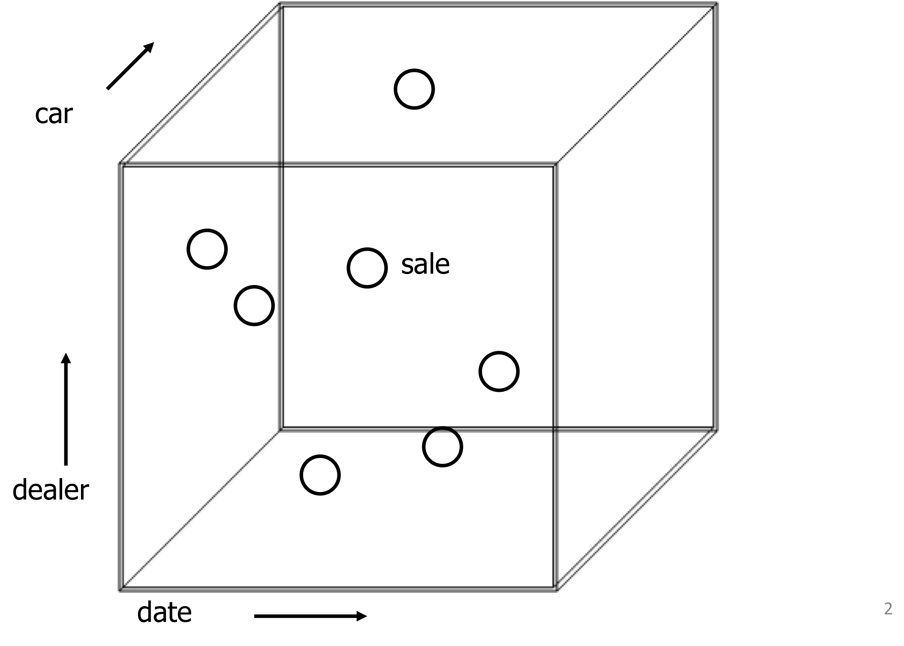

TAAI-V2DIP Distributed Processing
Introductie, thema's: V's, architecturen
Roelant Ossewaarde , D 2019-2020
1 Introductie
Deze slides horen bij de cursus AAI Distributed Processing.
1.1 Over Big Data
Systemen waarin data zó snel groeit dat de kosten van opslag en verwerking per datapunt hoger wordt dan de waarde er van.1.2 Visualizatie van typen data

1.3 Vijf V's
De toename van het volume van data stelt nieuwe eisen aan de manier waarop we data opslaan (storage) en aan de manier waarop we data opvragen (retrieval).
Tegelijkertijd is het steeds belangrijker dat de snelheid (velocity) van dataverwerking niet afneemt.
Ook de variëteit (variety) aan opgeslagen data verandert: er wordt per jaar bijna drie keer zo veel ongestructureerde data opgeslagen als gestructureerde data.
Het belang – en dus ook de waarde Value – van data in bedrijven neemt toe.
Voor sommige bedrijfsprocessen hoeft data niet per se 100% de werkelijkheid weer te geven veracity.
1.4 Cursus outline
Onderwerpen die we bespreken:
- Hoe je algoritmes in een Big Data omgeving distribueert.
- Big Data Architectuur
- Lambda en Kappa architectuur
- Big Data Storage & Retrieval
- HDFS
- NoSQL oplossingen
- Big Data Processing
- Parallel en gedistribueerd programmeren
- MapReduce
- Stream processing (Apache Spark & Flink)
- Big Data Analyse (Machine Learning)
1.5 Programma
| Lesweek | Dag | Onderwerp | Opdracht | Voorbereiding |
|---|---|---|---|---|
| 1 | di 14 apr | Introductie; NoSQL, Big Data | ||
| 1 | vr 17 apr | Opdracht 1 inleveren | ||
| 2 | di 21 apr | ADD, Apache ecostructuur | Kazman, ch. 2 | |
| 2 | vr 24 | peer review 1 inleveren | ||
| ** | ** | Paasvakantie | ||
| 3 | di 5 mei | Bevrijdingsdag | ||
| 3 | vr 8 mei | Nog meer architecturen, HDFS, dataopslag | ||
| 4 | di 12 mei | Streams & Apache; Spark | ||
| 4 | vr 15 mei | Opdracht 2 inleveren | ||
| 5 | di 19 mei | Casus: actuele systemen | Case-study streaming Netflix | |
| 5 | vr 22 mei | |||
| 6 | di 26 mei | Proeftentamen, losse eindjes | ||
| 6 | vr 29 mei | Opdracht 3 inleveren |
- De contactmomenten vinden steeds plaats via de discord-server.
- Opdracht 2 wordt ingeleverd via de Kaggle HU-DIP Bike Rentals competitie.
- Opdracht 3 wordt ingeleverd via Github Classroom.
1.6 Toetsing
- Opdracht:
- Je moet elk van de opdrachten voldoende afronden.
- Er zijn drie opdrachten die meetellen voor je cijfer.
- De opdrachten "volgen" op elkaar. Je kunt dus niet achterlopen.
2 Soorten data: OLTP vs OLAP
Een belangrijke toepassing van databases is om een analyse te doen van data: Online Analytic Processing (OLAP). Opgezochte informatie wordt dan vaak gebruikt om bedrijfsprocessen te sturen; de database wordt gebruikt als decision support system. Een bedrijf wil bijvoorbeeld weten welke producten beter of juist minder goed verkopen.
Decision support queries bevragen vaak grote datasets. Ter contrast: het registreren van bedrijfsprocessen raakt vaak maar een klein stukje van de database. Systemen die vooral registreren worden Online Transaction Processing (OLTP) genoemd.
Als je een aankoop doet bij Albert Heijn wordt die geregistreerd in een OLTP-systeem. Als Albert Heijn wil weten welke artikelen goed verkopen, gebruiken ze een OLAP-systeem.
2.1 Verschil OLTP en OLAP.
OLTP gaat uit van sommige aannames:
- Informatie-elementen worden altijd maar één keer, op één plaats, opgeslagen, om redundantie te voorkomen. Updates worden daardoor ook snel.
- Queries mogen complex zijn, want ze veranderen niet vaak.
- Full table scans worden zo veel mogelijk vermeden.
OLAP-queries zijn bijna altijd ad-hoc, en dus kun je de database niet vantevoren optimaliseren.
2.2 Uitgewerkt voorbeeld
Gegeven een standaard database met gegevens van producten, winkels en verkoop.

2.2.1 Voorbeeld-query #1
Hoe veel Prodent tandpasta hebben we gisteren verkocht in kleine gemeentes?
SELECT SUM(sale.quantity_sold)
FROM sale,
product,
product_category,
manufacturer,
store,
city
WHERE manufacturer_name = 'Prodent'
AND product_category_name = 'tandpasta'
AND city.population < 40000
AND sale.product_id = product.product_id
AND sale.store_id = store.store_id
AND Date(sale.date_time_of_sale) = Date(Sysdate()) - 1
AND product.product_category_id = product_category.product_category_id
AND product.manufacturer_id = manufacturer.manufacturer_id
AND store.city_id = city.city_id;
2.2.2 Voorbeeld-query : opwarmen
Query 2: Hoe veel producten hebben we in vakantiedagen verkocht?
SELECT SUM(sale.quantity_sold)
FROM sale,
holiday_map
WHERE DATE(sale.date_time_of_sale) = DATE(holiday_map.holiday_date);
Zelf doen: stel een query op voor de volgende vraag:
Query 3: Hoe veel producten hebben we op niet-vakantiedagen verkocht?
- Gebruik een kant-en-klare database:
- Log in via http://198.211.127.65/phpmyadmin.
- Gebruik als username / wachtwoord: je studentnummer.
- Gebruik database:
sales.
- Of maak je eigen database aan mbv. dit create-script.
Het antwoord moet zijn: 2006.
2.2.3 Voorbeeld-query: performance
Query 4: Welke winkels verkopen best-sellers?
SELECT store_id
FROM sale
GROUP BY store_id
HAVING SUM(quantity_sold) > 1000;
Zelf doen: stel een query op voor de volgende vraag:
Query 5: Wat wordt er verkocht in de winkels met best-sellers?
- Gebruik een kant-en-klare database:
- Log in via http://198.211.127.65/phpmyadmin.
- Gebruik als username / wachtwoord: je studentnummer.
- Gebruik database:
sales.
- Of maak je eigen database aan mbv. dit create-script.
Het antwoord moet zijn: 2004.
2.3 Sterschema: gedenormaliseerde database.
De objects of interest staan gegroepeerd in een fact table met zogenaamde dependent attributes, en alle eigenschappen staan in zogenaamde dimension tables. De fact table vormt het midden van de ster, en de dimension tables zijn de punten van de ster. Dimensies van een tabel met verkoop kunnen zijn: de datum van verkoop, de plaats van verkoop, het type item, de betaal-methode, etc.
In het eerste jaar in de database-cursus wordt juist een andere manier aangeleerd om schema's te ontwerpen, namelijk door normalizatie-regels.
2.3.1 Star schema voorbeeld
Dimensioneel (Star schema):
- Redundantie in de tabellen, bijvoorbeeld: bij iedere winkel wordt ook gelijk de stad opgeslagen.
- Eén fact-tabel, meerdere (vele) dimensies.
time_dimensionbevat al allerlei extra informatie over een datum om rekenen te verminderen.- Alleen die gegevens die nodig zijn voor analyse zijn opgeslagen.
2.3.2 Star schema queries
Query 2: Hoe veel producten hebben we in vakantiedagen verkocht?
SELECT td.holiday_flag, SUM(f.unit_sales)
FROM sale_fact f, time_dimension td
WHERE f.time_key = td.time_key
AND td.holiday_flag = 't'
GROUP BY td.holiday_flag;
+--------------+-------------------+ | holiday_flag | SUM(f.unit_sales) | +--------------+-------------------+ | t | 2 | +--------------+-------------------+ 1 row in set (0.00 sec)
Query 4: Welke winkels verkopen best-sellers?
SELECT sd.store_key, sd.name
FROM sale_fact f, store_dimension sd
WHERE f.store_key = sd.store_key
GROUP BY sd.store_key
HAVING SUM(f.unit_sales) > 1000
+-----------+-----------------------------+ | store_key | name | +-----------+-----------------------------+ | 16 | Albert Heijn Sarphatistraat | +-----------+-----------------------------+ 1 row in set (0.00 sec)
2.3.3 Star schema: zelf doen
Stel zelf de juiste queries op, maar nu in het star schema:
Query 3: Hoe veel producten hebben we op niet-vakantiedagen verkocht?
Juiste antwoord: 2006
Query 5: Wat wordt er verkocht in de winkels met best-sellers?
Juiste antwoord: 2004
- Gebruik een kant-en-klare database:
- Log in via http://198.211.127.65/phpmyadmin.
- Gebruik als username / wachtwoord: je studentnummer.
- Gebruik database:
sales_star.
- Of maak je eigen database aan mbv. dit create-script.
2.3.4 Slicing en dicing
Het is nu vrij eenvoudig om per dimensie de data samen te vatten:
Verkopen per fiscale periode:
SELECT td.fiscal_period, SUM(f.dollar_sales)
FROM sale_fact f, time_dimension td
WHERE f.time_key = td.time_key
GROUP BY td.fiscal_period;
+---------------+---------------------+ | fiscal_period | SUM(f.dollar_sales) | +---------------+---------------------+ | DEC. 2019 | 5505.50 | | NOV. 2019 | 11.80 | +---------------+---------------------+ 2 rows in set (0.00 sec)
Verkopen per stad
SELECT sd.city, SUM(f.dollar_sales)
FROM sale_fact f, store_dimension sd
WHERE f.store_key = sd.store_key
GROUP BY sd.city;
+-----------+---------------------+ | city | SUM(f.dollar_sales) | +-----------+---------------------+ | Amsterdam | 5511.00 | | Bilthoven | 6.30 | +-----------+---------------------+ 2 rows in set (0.00 sec)
2.3.5 Combineren van dimensies
Verkopen per stad per fiscale periode:
select sd.city, td.fiscal_period, sum(f.dollar_sales)
from sale_fact f, store_dimension sd, time_dimension td
where f.store_key = sd.store_key
and f.time_key = td.time_key
group by sd.store_key, td.fiscal_period;
+-----------+---------------+---------------------+ | city | fiscal_period | sum(f.dollar_sales) | +-----------+---------------+---------------------+ | Amsterdam | DEC. 2019 | 5500.00 | | Amsterdam | NOV. 2019 | 11.00 | | Bilthoven | DEC. 2019 | 5.50 | | Bilthoven | NOV. 2019 | 0.80 | +-----------+---------------+---------------------+ 4 rows in set (0.00 sec)
2.4 Slicing en dicing
Soms willen we de granulariteit van een dimensie verminderen. We zijn bijvoorbeeld niet geïnteresseerd in individuele auto's, maar in auto's gegroepeerd naar merk of kleur; of we willen alle verkopen op een dag nauwkeurig, in plaats van op de seconde nauwkeurig weten.
Voor dealers kunnen we indelen per dealer, per stad, per staat, of helemaal niet groeperen.
Het groeperen in een kubus heet dicing. We zijn vaak geinteresseerd in één specifieke dice: slicing. Queries die de data grover indelen, noemen we roll up-queries; een query die juist meer partities maakt en dus de data fijnmaziger indeelt, heet een drill-down-query.
2.5 De datakubus.

3 OLAP: Variety: Ongestructureerde data: text mining
Eén van de vijf V's van big data: variety.
Text mining representeert een klasse toepassingen waarbij uit ongestructureerde data (teksten, plaatjes, video, audio) informatie wordt verkregen.
In de kern gaat het bij text mining om het "samenvatten van tekst": afleiden van zinvolle karakteristieken waarmee je teksten kun vergelijken. Zo ook bij plaatjes/video/audio etc. Begrip: features.
3.1 Analyse van antwoorden op open vragen.
Bijvoorbeeld: klant-contact data en het vinden van sentiment.
Big Data projecten: Vodafone-Ziggo project.
3.2 Automatisch categoriseren van berichten, email.
Bijvoorbeeld: routeren van klantcontacten. Implementatie achter chatbots. Detectie van spam.
In video: vinden van illegale kopieën van video's op youtube.
3.3 Analyse van notities, bijvoorbeeld overdrachten medische dossiers, warranty claims bij verzekeringen.
In video: detecteren van beweging.
3.4 "Authorship attribution"
Gegeven een tekst, wie is de auteur?
Bijvoorbeeld belangrijk om te bepalen wat voor iemand een tweet heeft geplaatst (voor het targeten van advertenties).
Bijvoorbeeld: detectie van nepbellers bij de suicide hotlijn.
3.5 Named-Entity-Recognition.
Herkennen van namen en persoonsgerelateerde informatie.
Tegenwoordig zeer belangrijk om anonimiteit en privacy te garanderen (AVG),
Bijvoorbeeld: "Mijn tante Elsbeth ging gisteren naar New York."
In video: detecteren van objecten.
4 OLTP: Velocity: streaming data
Een stream is een unbounded, continuous, real-time flow of records.
Voorbeelden:
- GPS-bewegingen van voertuigem.
- Financiële transacties.
- Web traffic op websites
- Tweets van twitter.
- IoT-devices (Alstom!).
- Spelersgedrag in games.
"You don't request data, it comes to you."
4.1 Waarom is dat anders?
Voor sommige inzichten geldt: de waarde (value) neemt af als het langer duurt tussen het verkrijgen van de data en het berekenen van het inzicht.
Bijvoorbeeld: de bewaking van condities met sensoren (temperatuur, hartbewaking, geofencing).
Bijvoorbeeld: het detecteren van keywords in chat-gesprekken.
Bijvoorbeeld: bewegingsdetectie in beveiligingscamera's.
4.2 Realtime data is lastig voor een "batch"-model.
Data komt binnen als een continue stroom events.
Batch-processing betekent: opslaan van events, dan de data collectie onderbreken voor analyse, en dat herhalen.
Real-time betekent: data geanalyseerd als die binnenkomt.
5 Vooruitblik
5.1 Vrijdag: oefenen met:
- opstellen van functionele eisen met het MD3M-model.
- stoeien met data warehousing (SQL-queries).